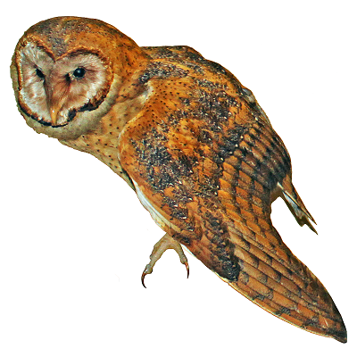
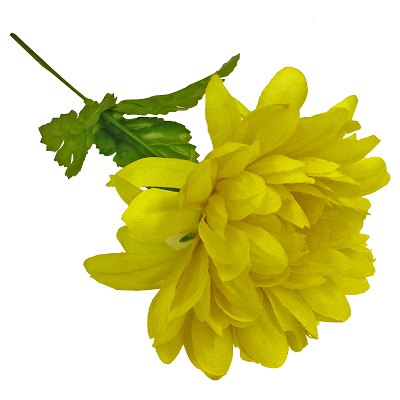

<!DOCTYPE html>
<html>
    <head>
        <title>Response to Images</title>
        <script src="jspsych-6.0/jspsych.js"></script>
        <script src="jspsych-6.0/plugins/jspsych-html-keyboard-response.js"></script>
        <script src="jspsych-6.0/plugins/jspsych-image-keyboard-response.js"></script>        
        <link href="jspsych-6.0/css/jspsych.css" rel="stylesheet" type="text/css"></link>
    </head>
    <body></body>

<script>


/* create timeline */
    var timeline = [];

/* collect and add the subject ID to the file */
   var subject_id = {
   type: "html-keyboard-response",
   stimulus: "Enter Participant Number"};
   timeline.push(subject_id);
   jsPsych.data.addProperties({
	subject.subject_id
	});
	
	
/* define welcome message trial */
    var welcome = {
      type: "html-keyboard-response",
      stimulus: "Welcome to the experiment. Press any key to begin."
    };
    timeline.push(welcome);

    /* define instructions trial */
    var instructions = {
      type: "html-keyboard-response",
      stimulus: "<p>In this experiment, pictures will appear on the " +
          "screen.</p><p>If you can <strong>name</strong> it, " +
          "press the letter Y on the keyboard as fast as you can.</p>" +
          "<p>If you cannot <strong>name</strong> it, press the letter N " +
          "as fast as you can.</p>" +
          "<div style='float: left;'></img>" +
          "<p class='small'><strong> For example, press the Y key if you can name it.</strong></p></div>" +
          "<div class='float: right;'></img>" +
          "<p class='small'><strong>Press the N key if you cannot name it.</strong></p></div>" +
          "<p>Press any key to begin.</p>",
      post_trial_gap: 2000
    };
    timeline.push(instructions);

/* test trials */
    var test_stimuli = [
      { stimulus: "images/comb.png"},
      { stimulus: "images/apple.png"},
      { stimulus: "images/moon.png"},
      { stimulus: "images/flag.png"},
      { stimulus: "images/owl.png"},
      { stimulus: "images/flower.png"},
      { stimulus: "images/pot.png"}

    ];


    

/* add fixation cross */
     var fixation = {
      type: 'html-keyboard-response',
      stimulus: '<div style="font-size:60px;">+</div>',
      choices: jsPsych.NO_KEYS,
      trial_duration: 1000
      
    }

    var test = {
      type: "image-keyboard-response",
      stimulus: jsPsych.timelineVariable('stimulus'),
      choices: ['y', 'n'],
      
    }

    var test_procedure = {
      timeline: [fixation, test],
      timeline_variables: test_stimuli,
      randomize_order: true
    }

    timeline.push(test_procedure);


/* start the experiment */

jsPsych.init({
  timeline: timeline,
  default_iti: 250,
  
});

</script>
</html>